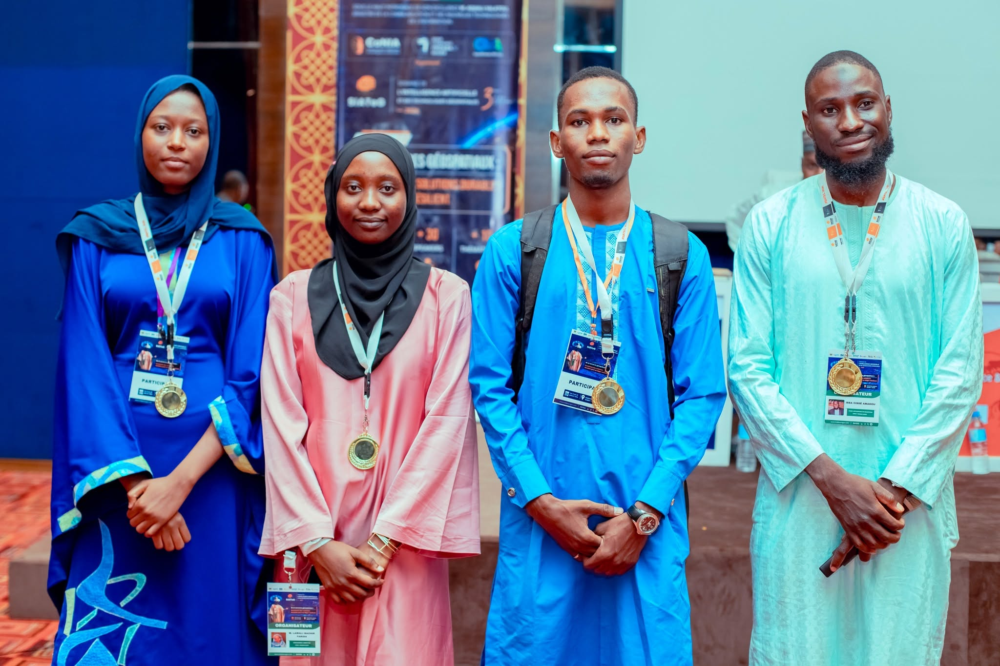
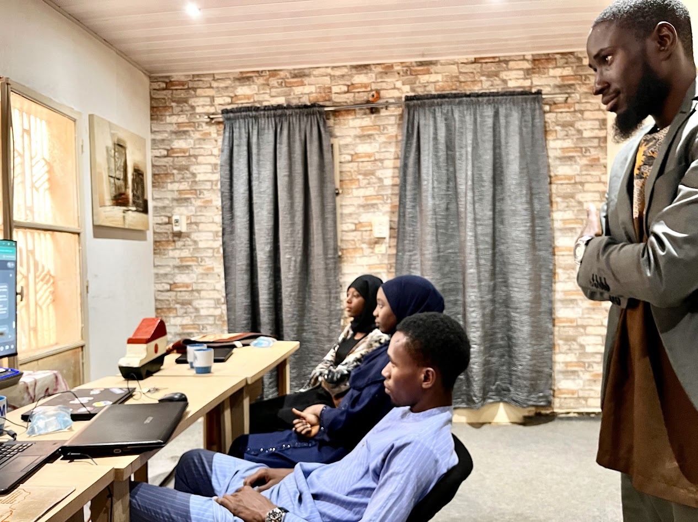
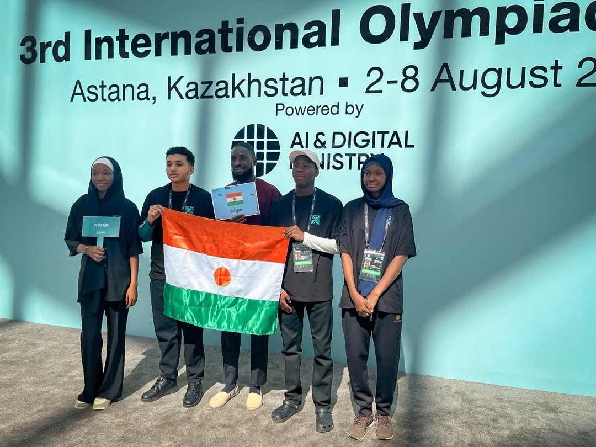
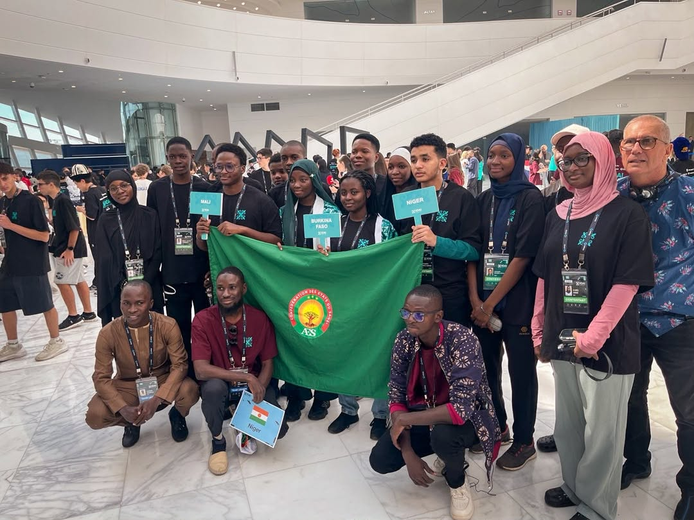
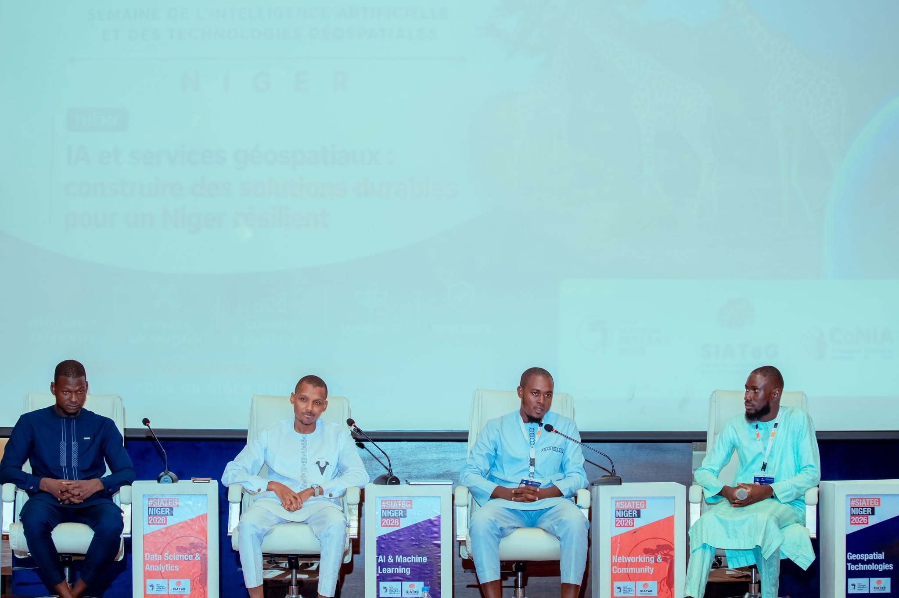
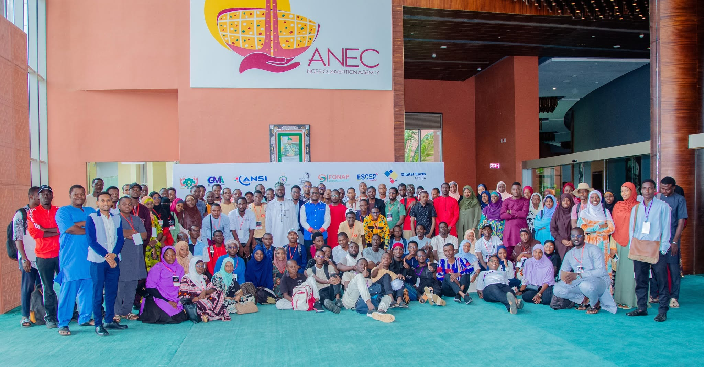
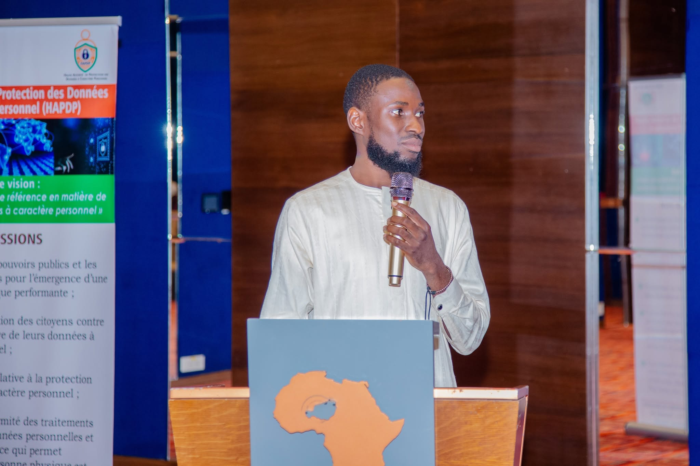
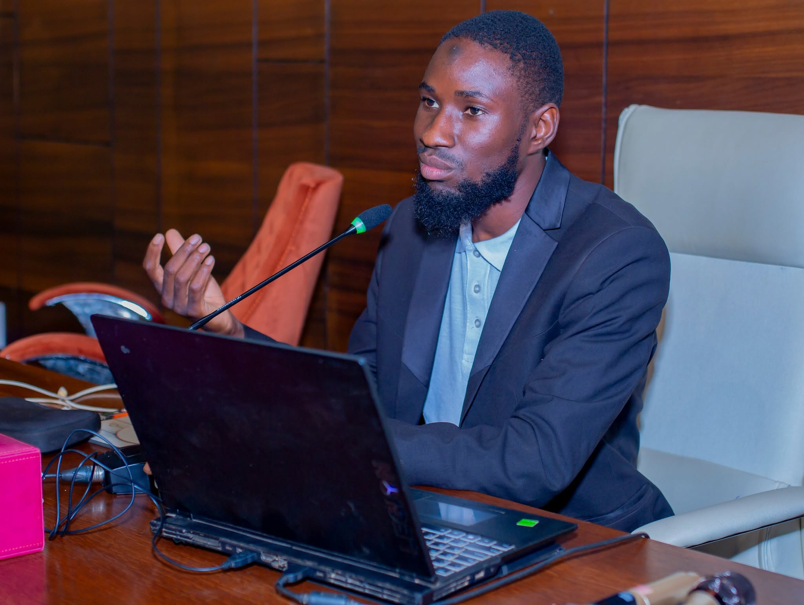
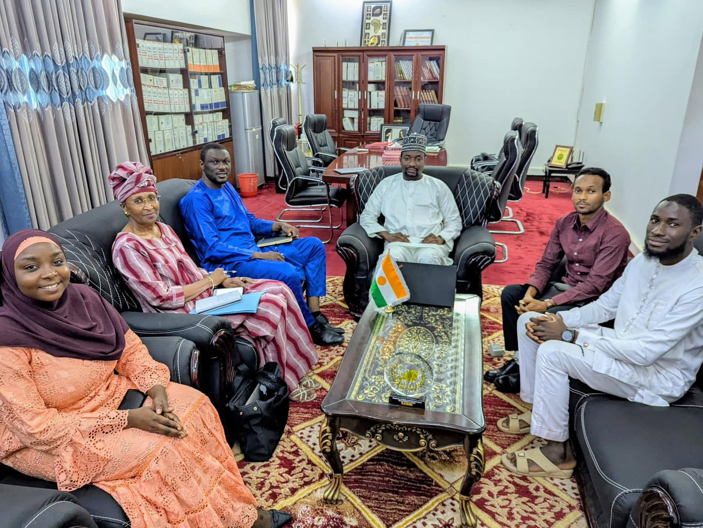

Geospatial intelligence
Spatial data acquisition, management, analysis, remote sensing and thematic cartography.
I connect geospatial intelligence, emerging technologies and human collaboration to turn complex challenges into practical solutions.
I am Issa Amadou A. Cissé, a multidisciplinary professional working across GIS, territorial management, artificial intelligence, entrepreneurship and community leadership.
With more than five years of experience in geospatial analysis and technology-enabled initiatives, I bring together technical thinking, project coordination and a strong interest in solutions that respond to local realities. My work is rooted in Niger and connected to wider regional and international communities.
Different disciplines. One direction: making information, technology and people work better together.
Spatial data acquisition, management, analysis, remote sensing and thematic cartography.
AI literacy, community enablement, responsible adoption and technology for development.
Programme coordination, stakeholder engagement, team facilitation and event leadership.
Business development, strategic positioning, digital services and early-stage ventures.
A geospatial civic-tech concept designed to help local authorities organize urban information, monitor community-reported issues and support better municipal decisions.
A tourism initiative aiming to make Niger's destinations, accommodation, experiences and local tourism services easier to discover.
A service connecting Nigeriens abroad with families at home through the purchase and delivery of goods, supported by digital payment and fulfilment workflows.
Community and youth initiatives supporting AI awareness, national olympiad selection and preparation, mentorship and international participation.
Coordinated candidate selection and preparation for Niger's teams, supported learning sessions and evaluation, facilitated English–French material translation and contributed to international participation. Both teams earned bronze-level recognition.
Contributed to the organization and moderation of conversations connecting decision-makers, professionals and young people around AI, data and sustainable development.
Contributed to youth initiatives and the Camp de la jeunesse de Say, including activities that introduce artificial intelligence and emerging technologies to students, professionals and entrepreneurs.
Supporting communities that bring together learners and practitioners around artificial intelligence, geospatial thinking and technology for development.
Selected experiences at the intersection of artificial intelligence, education, community building and international collaboration.
In 2026, I served as Team Leader for Niger’s teams participating in the African Olympiad in Artificial Intelligence (AOAI) and the International Olympiad in Artificial Intelligence (IOAI). The work connected national talent identification with structured preparation and international participation.
My responsibilities included reviewing nationwide online selection results, coordinating the final team profiles, mobilizing volunteer technical support, aligning training and evaluation sessions, translating learning materials and tests from English into French, and supporting the IOAI team’s participation in Kazakhstan. Niger’s teams returned with bronze medals and recognition badges.






Through SIATeG and the wider IndabaX Niger community, I contribute to conversations and activities that connect decision-makers, researchers, professionals, students and entrepreneurs around artificial intelligence, data and sustainable development.
The 2025 edition, held from 29 to 31 July at the Mahatma Gandhi International Conference Centre, focused on sustainable development in the age of AI and big data. SIATeG has brought together more than 300 participants annually since 2024. My involvement includes community mobilization, event contributions and panel moderation.





Business strategy, growth initiatives, partnerships and service operations.
Geospatial data collection, analysis, mapping and capacity building.
Coordination of medical and automotive assistance cases, client communication and operational follow-up.
Hassan II University · Casablanca, Morocco
For a tailored application, request the GIS-focused or general CV by email.
Choose the version that best matches the opportunity or assignment.
A broad overview of my professional experience, skills and leadership.
Download English CV ↗A general French-language presentation of my background and experience.
Download French CV ↗A focused version highlighting geospatial expertise, tools and technical assignments.
Download GIS CV ↗Open to meaningful collaborations, consulting opportunities, speaking engagements and projects at the intersection of GIS, AI and development.